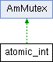

SEMS
Main Page
Related Pages
Namespaces
Data Structures
Files
Directories
Examples
Data Structures
Class Hierarchy
Data Fields
Public Member Functions
atomic_int Class Reference
Inheritance diagram for atomic_int:

Public Member Functions
void
set
(unsigned int val)
unsigned int
get
() const
unsigned int
inc
(unsigned int add=1)
unsigned int
dec
(unsigned int sub=1)
bool
dec_and_test
()
The documentation for this class was generated from the following file:
atomic_types.h
Generated by
1.7.6.1
 1.7.6.1
1.7.6.1